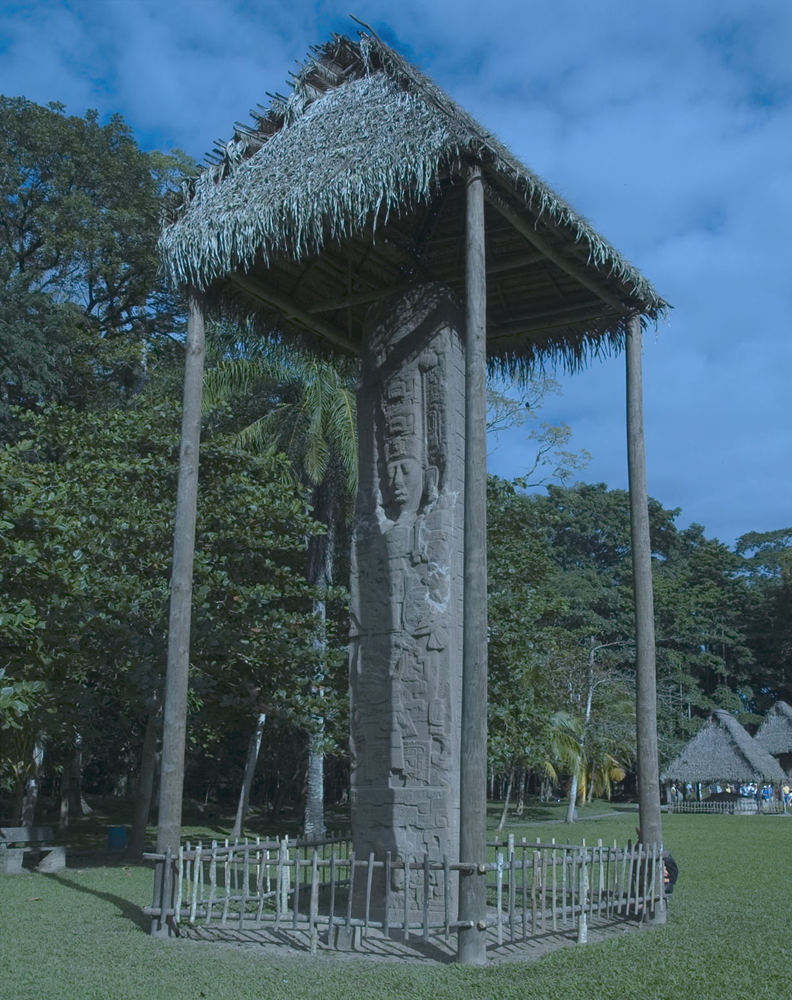
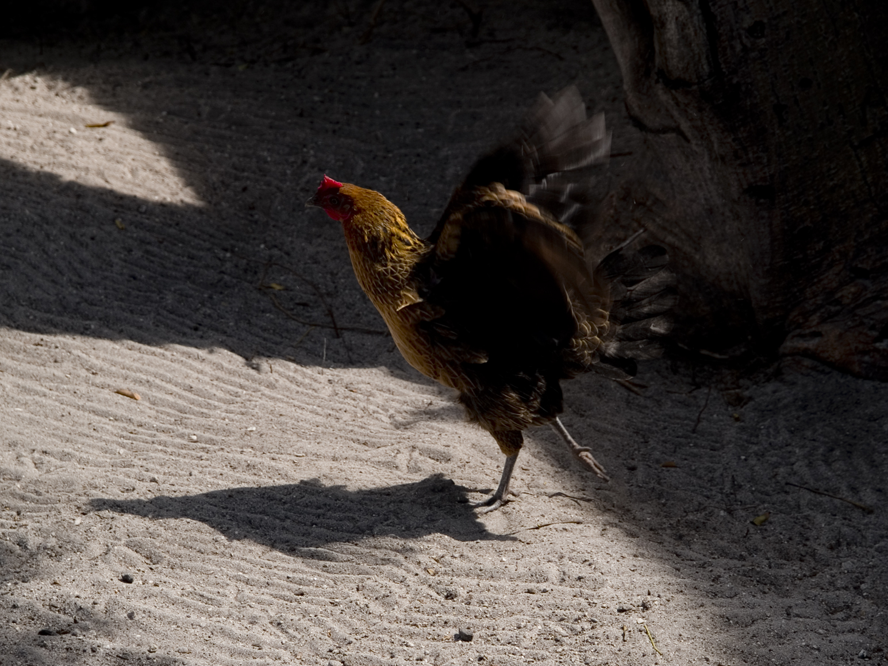

Highlights, Midtones, and Shadows Photoshop Tutorials
This page contains a series of images edited using Photoshop tutorials on the various subjects noted below. The images on the left are the original unedited versions, while the images on the right are the final versions achieved by following the processes outlined in each section.
Automatic Image Correction


I edited this image using the Auto Color command and then adjusting the Brightness/Contrast by increasing the contrast and lowering the brightness slightly.
Adjusting Brightness Levels

I corrected the colors in this image by starting with the Auto Color command, then Auto Tone, and adjusting the shadows and highlights on the red, green, and blue level channels. I also darkened the shadows on the RGB composite image and raised the gamma value to lighten the midtones. As a finishing touch, I increased the saturation to make the colors brighter and more vibrant.
Correcting with Curves


In order to give this image a more naturing coloring, I adjusted the curves histogram, adding points onto the corresponding graph to lighten the shadows and darken the highlights. Since the original image was also very red, I added three points onto the red channel graph that served to reduce the intensity of the red and darken the red in the shadows. As with the previous images, the final step was increasing the Hue/Saturation.
Compensating for Flash and Backlighting

The make this image less shadowed and easier to see, I first adjusted the Shadows/Highlights, reducing the shadows and somewhat increasing the highlights. Under the advanced options in that menu, I brought the Radius values up to make the transition between shadows, midtones, and highlights smoother. I made a few additional changes by playing around with the other options until the image was sufficiently bright and clear.